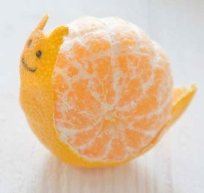

A quick fortnightly wrap-up for weeks 146 and 147. 146 is a strange and bizarre mathematical number. The eastern 146 meridian cuts through several Australian cities. It also gives its name to 146 Lucina asteroid. The number 147 also has an asteroid 147 Protogeneia. 147 is also the highest possible breaking score in snooker without any fouls or errors.
These last two weeks have seen a lot of action in the office. We’ve been wrapping-up last minute changes to the survey collection web-app to get that ready for report generation. Then we actually launched the companion product, the reports viewing web-app. Now as customers complete their surveys, we can seamlessly import them into our reporting web-app for anyone to view and interact with. Undoubtably we’ll be working out some kinks and growing pains in the next few weeks, but at least it is now officially launched. It is several months in the making and we’re happy to see it finally have active users.
This week we also received a nice postcard from our Q3 contest winner. We gave away a pack of fun summer postcards to send to friends and families. As part of the bargain for us to send a pack of postcards, the winner had to send one back to us – and it arrived with a lovely message all the way from India! The timing was great because we also pulled the Q4 winner, the 02010 24ways charity book. This too is heading off to India. Remember you can’t win if you don’t enter!
We’ve decided that in 02014 we are going to think more about randomness. This could be in our influences, our approach to projects, or use of interactive tools, like color or controls. As part of this, we’ll be giving away a series of books all about randomness – starting with, Rock paper scissors game theory in everyday life by Len Fisher
These weeks also consisted of several meetings and leads for new ideas and development. We’re getting more and more focused on the types of projects we are looking for and taking on. Knowing and focusing on something specific is hard to decide, but once you do, it frees you up to easily say NO to many other projects.
We think we also found a supplier for the 270g yellow paper we are looking for, for our next letterpress project. We’ve handed the baton over to the printer to get us a new price estimate, timeline as well as confirming that the paper will work in their setup. Keep an eye on this space for some exciting letterpress news!
This week the paperback version of A Pocket Guide to Creating Symbol Fonts went on sale as Five Simple Steps’s Pocket Gyude Collection One. There are four amazing books in the series. I can highly recommend all of them. Order one, because if it goes well they will print the next few series too.
Bric-à-brac
Those crazy Japanese, the newest trend is to create sculptures from orange rinds: Orangegami. It is actually quite a feat to think about a 2D picture and wrap it onto a 3D shape. There is a large spacial awareness needed to comprehend how it will look unfolded.
There are some amazing designs. Horses, dragons and monkeys. The trick is to take the peel off as a single piece and use the whole thing in your design. Not breaking it apart or re-arranging it to produce the desired animals.